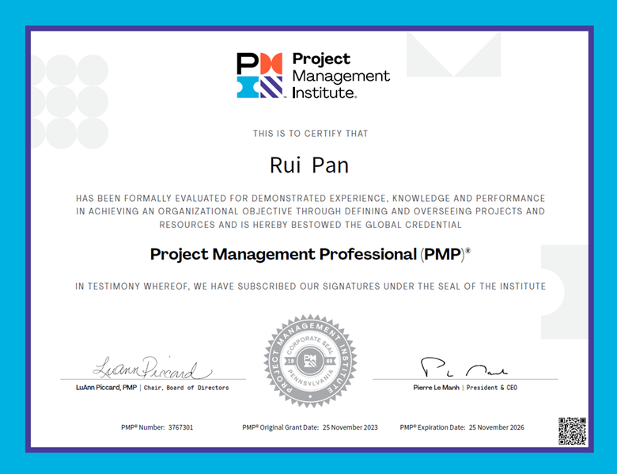
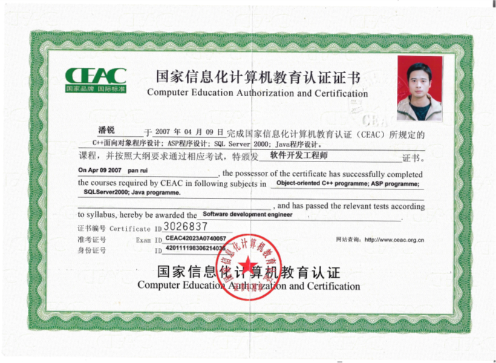

Skills & Professional Capabilities
A blend of technical, product, cloud, leadership, and development skills built through 12+ years of industry experience and formal IT training.
IT Tech Support
Skills: Networking Fundamentals, Cisco CCNA, Windows Server Administration, PowerShell, Virtualization Tools, Troubleshooting & Diagnostics
Developed practical IT support capabilities through formal training and hands‑on labs, including core networking skills, Cisco routing & switching (CCNA in progress), Windows Server administration, PowerShell & CMD operations, virtualization tools, PC hardware diagnostics, and end‑to‑end troubleshooting across systems and networks.
Product Management
Skills: Requirement Analysis, Market Research, Product Road mapping, Project Coordination, Proposal Preparation
Over 12 years of experience as a cloud desktop Product Manager, mastering requirement analysis, product design, market strategy, sales enablement, channel development, product training, product launch execution, and cross‑functional project coordination.

Cloud & Virtualization
Skills: Desktop Cloud, Virtual Machines, Cloud Product Support
Twelve years of experience working at two leading cloud desktop vendors in China, with deep exposure to private cloud architecture, virtualization principles, desktop protocols, virtual networking, server & thin‑client hardware, and cloud solution design. Familiar with VMware and Citrix products; currently studying Microsoft Azure and AWS.
Leadership & Collaboration
Skills: Team Leadership, Cross-Functional Collaboration, Customer Communication
Extensive experience leading teams and collaborating across departments, applying structured soft‑skill frameworks such as leadership coaching, retrospectives, gap analysis, SMART goals, 5W2H, and 5 Whys. These methods have become ingrained habits through deliberate practice and real‑world execution.

Software Development
Skills: Java, SQL, Pre-sale Software Consultation, ERP/PM/GS Systems
Originally trained in Java development with top academic performance, later designed and led the development of a project management system. Although no longer coding full‑time, strong foundational knowledge in programming and system logic continues to support my work in IT and product roles.
